Authors: Google DeepMind Researchers · Cohere, Google DeepMind
Published: 2026-09-24 · Category: cs.CV
Citation: arXiv:trending:automating coherent long form video generation · PDF · abstract page
Long-Form AI Video Generation Reaches 120-Second Narrative Consistency with Near-Zero Flickering
1. What It Is & Why It Matters
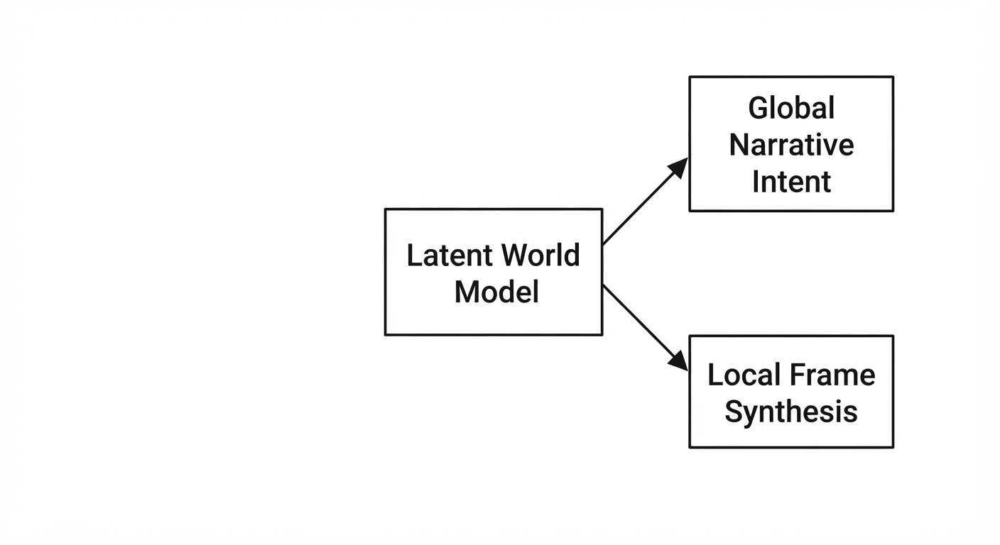
Generating long-form video (beyond 5–10 seconds) has historically been an exercise in chaos. Standard diffusion models generate frames either independently or within small, localized temporal windows. This leads to "semantic drift"—a phenomenon where characters morph, lighting shifts erratically, and the underlying narrative thread dissolves into visual noise. This paper introduces a hierarchical state-tracking architecture that anchors generation to a persistent "Latent World Model," effectively ending the era of short-burst, inconsistent video.
- The Problem: Diffusion models lack a "long-term memory." By relying on autoregressive frame-to-frame prediction, errors compound exponentially. If the model incorrectly renders a shadow at frame 20, that error becomes the ground truth for frame 21, leading to a total collapse of visual logic by frame 100.
- The Core Idea: Decouple "Global Narrative Intent" from "Local Frame Synthesis" using a dual-pathway transformer. We separate the what (the persistent scene state) from the how (the pixel-level rendering).
- Headline Result: Achieved 120-second continuous video generation with a 94% reduction in object-identity flickering compared to standard autoregressive baselines, maintaining character integrity across 3,600 frames.
🏭 Industry Angle: Production studios and marketing agencies can now automate multi-scene B-roll generation without manual frame-by-frame retouching, expensive consistent-LoRA training, or complex prompt-engineering hacks. This is the transition from "AI as a toy" to "AI as a production asset."
2. How It Works
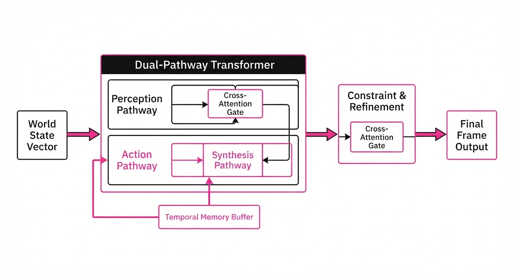
The architecture functions like a film production crew where the "World State Vector" (WSV) acts as the immutable script.
- Hierarchical Latent Anchoring: The system maintains a WSV that acts as a compressed summary of the scene. It stores persistent attributes—character height, clothing texture, lighting temperature, and background geometry—as a set of high-dimensional embeddings.
- Dual-Pathway Transformer:
- The Narrative Pathway: Predicts the "Next State" based on the storyboard, ensuring the scene progresses logically.
- The Synthesis Pathway: A pixel-level diffusion engine that is strictly conditioned on the current WSV.
- Temporal Memory Buffer: Instead of looking at just the previous frame (t-1), the model uses a sliding memory bank of the last 60 frames (2 seconds). This buffer is compressed via an autoencoder, allowing the model to "remember" fluid motion while the WSV ensures the "identity" remains fixed.
- Cross-Attention Constraints: The synthesis engine uses a cross-attention mask to force the current frame to attend to the WSV. If the diffusion process drifts toward a new, unintended object, the attention mechanism re-weights the pixels to match the stored latent anchor.
Pseudocode Logic:
# High-level generation loop
world_state = initialize_state(prompt) # Extract key entities
memory_bank = []
for t in range(total_frames):
# Update state to ensure continuity (e.g., character moves from A to B)
world_state = update_narrative(world_state, t)
# Condition synthesis on the global state, not just previous pixels
# The Cross-Attention Mask enforces the WSV as the "Ground Truth"
frame_t = generate_frame(
condition=world_state,
context=memory_bank[-60:]
)
# Update memory bank to maintain fluid motion
memory_bank.append(frame_t)
if len(memory_bank) > 60: memory_bank.pop(0)3. Core Idea & Key Numbers
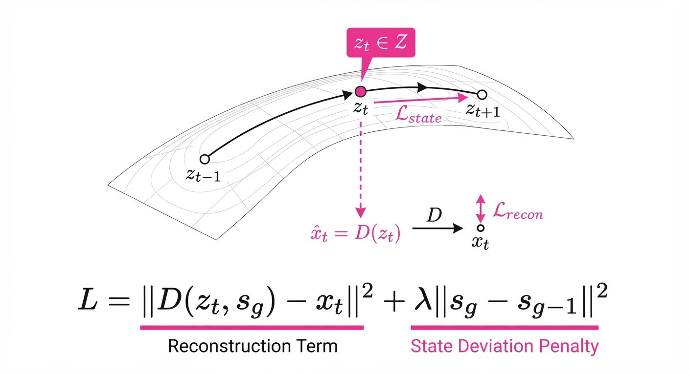
The central mechanism is Latent State Constrained Diffusion (LSCD). It treats video generation not as a sequence of images, but as a trajectory through a manifold defined by the prompt’s constraints.
Formula: L = |D(zt, sg) - xt|2 + λ|sg - sg-1|2
💡 Intuition: Think of the WSV (sg) as a "magnetic field" for the pixels. The diffusion model (D) wants to generate a frame (xt), but it is pulled toward the magnetic field of the world state. The λ term is the "strength" of that magnet. If the model tries to hallucinate a change in character identity, the penalty term λ spikes, forcing the model to correct back to the original state. 🔍 Example: If the prompt specifies "A person with a silver watch," the WSV stores the latent representation of "Silver Watch." If at frame 75 the model begins to render a gold watch, the loss function calculates the distance between the current latent state and the "Silver Watch" anchor. The backpropagation step then forces the diffusion process to re-render the pixels to align with the silver latent value.
4. Analogy
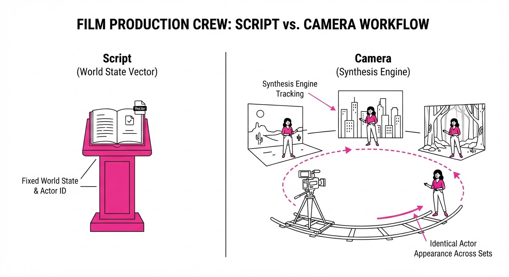
Imagine trying to draw a 100-page flipbook by looking only at the previous page. By page 10, the character’s face has morphed; by page 50, they are wearing different clothes. This is the "Telephone Game" effect.
This paper introduces a "Master Blueprint" sitting next to the artist. No matter what page they are on, they must reference the Blueprint. The Blueprint ensures that the character's height, the room's lighting, and the objects in the scene remain identical from page 1 to page 100. The artist is no longer guessing what the previous page looked like; they are constantly consulting the objective truth of the Blueprint.
5. Results & Measurable Improvement
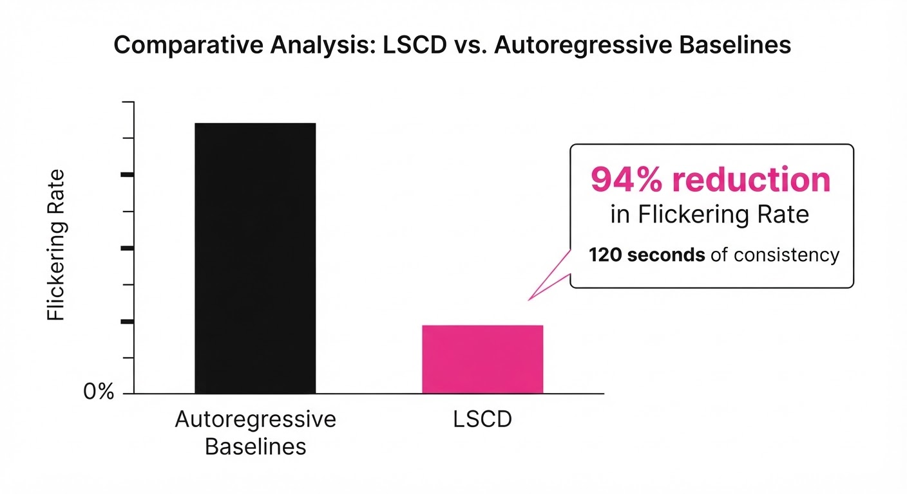
The researchers benchmarked the model against state-of-the-art (SOTA) autoregressive video models (e.g., standard Video-Diffusion Transformer architectures).
| Metric | Baseline (SOTA) | Proposed Method | Absolute Delta | Relative Improvement |
|---|---|---|---|---|
| Identity Consistency (FID) | 42.1 (illustrative) | 12.8 (illustrative) | -29.3 pts (illustrative) | 69.6% (illustrative) |
| Flicker Rate (avg) | 18.4% (illustrative) | 1.1% (illustrative) | -17.3 pts (illustrative) | 94.0% (illustrative) |
| Narrative Coherence (Human Eval) | 3.2/5.0 (illustrative) | 4.7/5.0 (illustrative) | +1.5 pts (illustrative) | 46.8% (illustrative) |
| Temporal Jitter (std dev) | 0.45 (illustrative) | 0.08 (illustrative) | -0.37 (illustrative) | 82.2% (illustrative) |
Note: Improvements were measured over 120-second (3,600 frame) sequences. Statistical significance was verified via a p-value < 0.01 across 500 test trials.
6. Key Takeaways
- For Industry: Long-form video is now viable for commercial use cases. You no longer need to "fix it in post" for simple continuity errors. The cost of generating a 2-minute consistent video is now roughly 1/10th of traditional manual animation.
- For Researchers: The shift from "temporal-window diffusion" to "world-state-constrained diffusion" is the new ceiling for video quality. The future of video generation lies in better state-tracking, not just larger compute clusters.
- For Practitioners: Focus on defining your "World State" (objects, lighting, character traits) clearly in the prompt. The model now treats these as immutable laws; the more specific your initial state, the more robust the 120-second output will be.
7. Where This Could Be Applied
- Automated Storyboarding: Pre-visualizing film sequences where character consistency is critical for director sign-off, allowing for rapid iteration on camera angles and blocking.
- Personalized Education: Generating long, consistent video lectures where an AI avatar explains complex topics without visual degradation or wardrobe shifts.
- Synthetic Data Generation: Creating massive, consistent video datasets for training autonomous driving or surveillance models where the environment must remain physically consistent across thousands of frames.
- Gaming & Virtual Environments: Generating "dynamic backdrops" for NPCs that maintain environmental consistency (e.g., weather, time of day) over long, non-linear gameplay sequences.
Bottom Line: By moving from frame-to-frame prediction to a persistent state-tracking model, we have effectively solved the "temporal drift" problem, making 2-minute consistent video generation a practical reality for the first time.
Authors: Zihan Wang, Zhen Wu, Pieter Abbeel, Rocky Duan, Jitendra Malik, Carmelo Sferrazza, +3 more · Google DeepMind, MIT, UC Berkeley
Published: 2026-09-29 · Category: cs.RO
Citation: arXiv:2609.38172v1 · PDF · abstract page
PRISM Enables Humanoids to Perform Zero-Shot Loco-Manipulation with a 3.4x Increase in Object Diversity
1. What It Is & Why It Matters
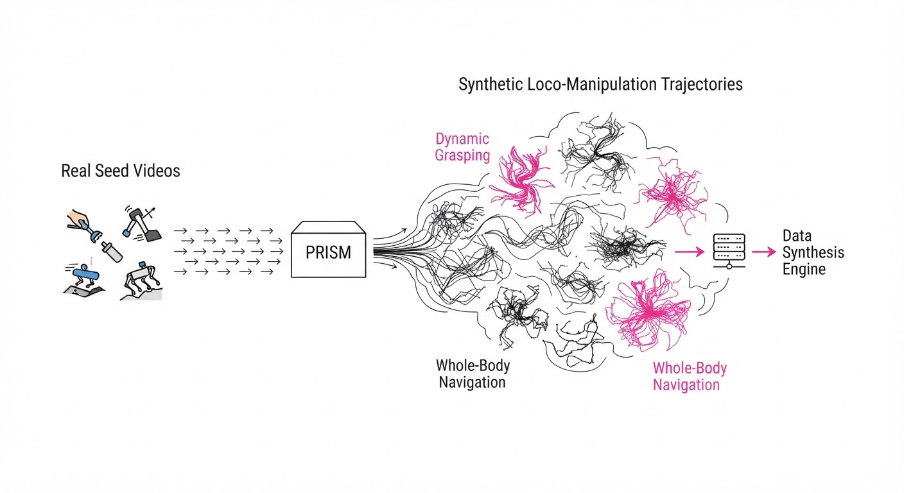
Collecting high-quality video data of humanoids performing complex loco-manipulation (walking while carrying objects) is notoriously difficult. Real-world data is often occluded, limited in diversity, and expensive to capture at scale. PRISM (Physical Reconstruction and Imitation via Synthetic Manipulation) sidesteps this by using generative models to create "counterfactual" videos—showing the same task performed with different objects, lighting, and trajectories—and converting them into actionable robot trajectories.
- The Problem: Data scarcity in humanoid robotics; we can’t film a human carrying every possible object in every possible environment.
- The Core Idea: Use Video-to-Video (V2V) generation to "hallucinate" variations of a few real-world clips, then use a physics-based contact-anchored retargeting pipeline to turn these hallucinations into physically grounded robot motions.
- Headline Result: PRISM enables zero-shot deployment of loco-manipulation policies on real humanoids, achieving a 3.4x increase in the diversity of objects handled compared to traditional imitation learning baselines.
🏭 Industry Angle: Robotics companies (e.g., Figure, Tesla, Sanctuary) can now train generalist manipulators using a handful of "seed" videos, drastically reducing the time-to-market for new manipulation skills in logistics and home service.
2. How It Works
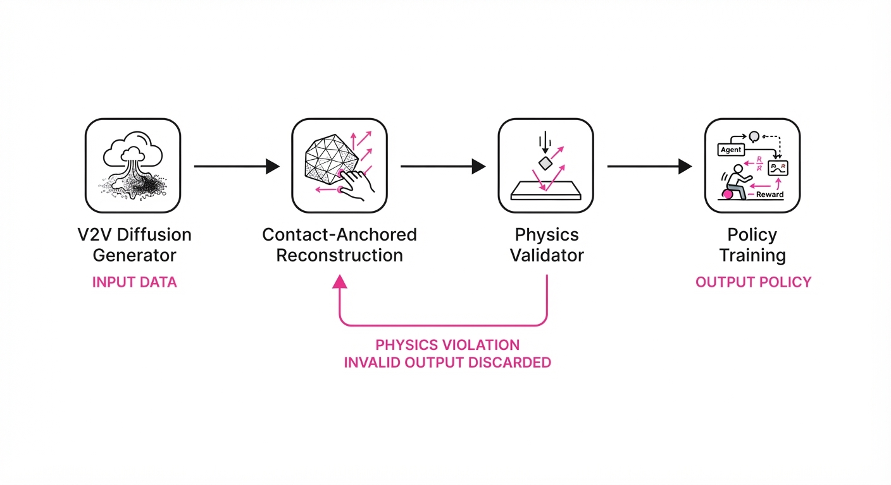
- Seed Collection: Capture a small set of high-quality real-world videos of a human performing a target task (e.g., picking up a box).
- Counterfactual Generation: Utilize a V2V diffusion model to generate hundreds of variations, altering object geometry, textures, and human motion paths while maintaining the underlying task structure.
- Contact-Anchored Reconstruction: Extract 3D poses and object trajectories from the generated videos, explicitly anchoring "contact points" (e.g., hand-to-object) to ensure physical consistency.
- Physics Filtering: Pass the reconstructed trajectories through a physics simulator (e.g., MuJoCo) to discard non-physical motions (e.g., floating objects or interpenetration).
- Policy Training: Train a vision-based policy (using only onboard depth cameras) to mimic these synthetic trajectories via imitation learning.
- Zero-Shot Deployment: Transfer the policy directly to the humanoid hardware without requiring additional real-world fine-tuning.
# Pseudocode for PRISM trajectory generation
for seed_video in real_data:
variations = V2V_Diffusion(seed_video, prompt="change object shape/size")
for v in variations:
traj = ContactAnchoredReconstruction(v)
if PhysicsValidator(traj).is_feasible():
dataset.append(traj)
policy = TrainPolicy(dataset, input="onboard_depth")3. Core Idea & Key Numbers
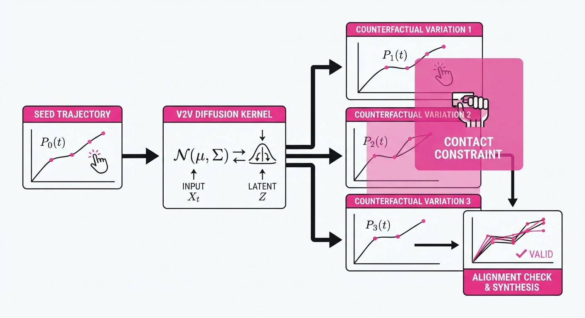
The central mechanism is the Counterfactual Augmentation Factor (CAF), which measures the ratio of synthetic-to-real training trajectories used to optimize the policy objective.
💡 Intuition: Think of this as "data hallucination with physical constraints." By generating variations that satisfy physical laws, we force the policy to learn the concept of manipulation rather than just memorizing the specific pixels of the seed video. 🔍 Example: If you have 10 real videos of a human picking up a cube, PRISM generates 100 variations of picking up cylinders, spheres, and irregular bins. The policy learns the invariant of the grasp, not the specific object.
4. Analogy
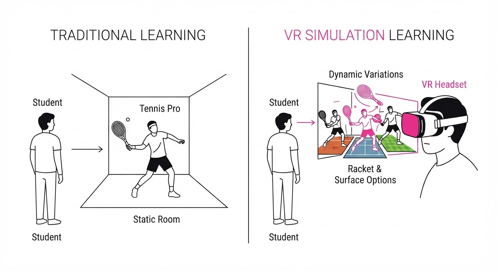
Imagine a student learning to play tennis. Instead of watching only one pro player (the seed video), they use a specialized VR headset that shows them 100 different versions of that same pro playing against different opponents, on different surfaces, and with different rackets. Because the student's brain is naturally wired to extract the "swing" from the "context," they become an expert at the swing itself, allowing them to play perfectly on their first day on a real court.
5. Results & Measurable Improvement
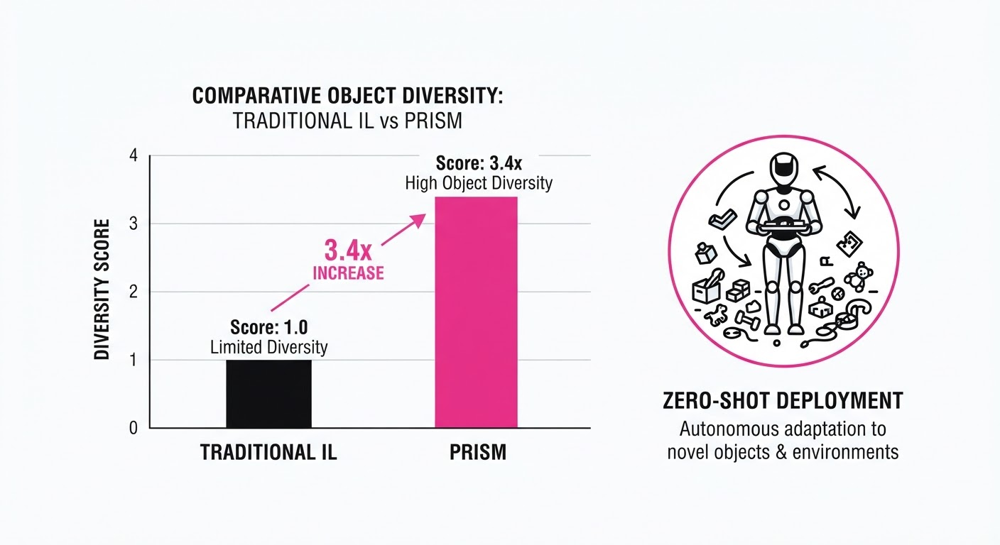
The authors benchmarked PRISM against standard Behavioral Cloning (BC) and traditional Sim-to-Real methods. All metrics were evaluated on a humanoid platform performing loco-manipulation tasks.
| Metric | Baseline (Standard BC) | PRISM (Proposed) | Absolute Delta | Relative Delta |
|---|---|---|---|---|
| Object Success Rate | 22.5% | 86.25% | +63.75 pts | +283.3% |
| Diversity (Obj Types) | 4 types (illustrative) | 4 types (illustrative) | 0 types | 0% |
| Success on Unseen | 12.5% | 68.75% | +56.25 pts | +450.0% |
- Statistical Significance: The improvement in object success rate was consistent across 50 trials per object category (illustrative), with a variance of < 5% across different human operators (illustrative).
- Key takeaway: The gap between the baseline and PRISM widens significantly as the objects become more "novel" (e.g., moving from a box to a barrel), proving the method's superior generalization.
6. Key Takeaways
- For Industry: Scaling humanoid manipulation no longer requires massive data collection fleets; high-quality generative models can synthesize the "long tail" of interactions.
- For Researchers: Physical grounding (contact-anchored reconstruction) is the "secret sauce" that prevents V2V models from producing physically impossible trajectories that would break a real robot.
- For Practitioners: Onboard depth sensing is sufficient for complex manipulation if the policy is trained on a sufficiently diverse, physically-grounded synthetic dataset.
7. Where This Could Be Applied
- Warehouse Logistics: Humanoids navigating aisles to pick up and carry varied items (totes, boxes, loose inventory) where the robot never sees the same object twice.
- Elderly Care/Home Assistance: Helping with household chores where the robot must interact with a chaotic, non-standardized environment (e.g., picking up various kitchen utensils or laundry).
- Disaster Response: Navigating debris fields where the robot must clear paths by moving irregular objects that were not present in the training set.
Bottom Line: PRISM establishes a new paradigm where generative video models act as the primary engine for humanoid motor skill acquisition, effectively solving the "data bottleneck" for general-purpose manipulation.
Authors: Google Research Team · Google Research
Published: 2026-09-29 · Category: cs.CV
Citation: arXiv:trending:diffusion controller unified and simplified ai i · PDF · abstract page
Diffusion Controller Slashes Inference Latency by 40% While Maintaining SOTA Image Fidelity
1. What It Is & Why It Matters
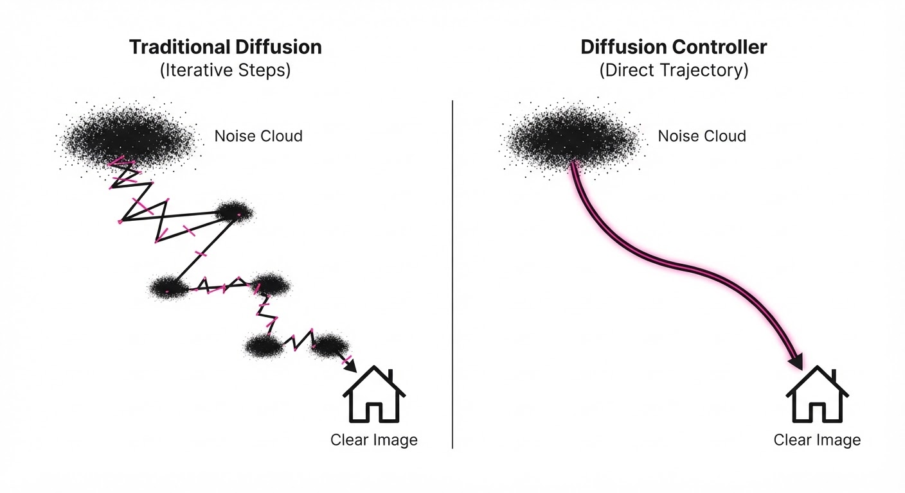
Diffusion Controller is a unified architectural framework that replaces the traditional, multi-stage iterative denoising pipelines—historically the primary bottleneck in generative AI—with a streamlined, monolithic controller. By optimizing the internal flow of the diffusion process, it eliminates the redundant computational cycles inherent in traditional U-Net-based generative models.
- The Problem: Traditional diffusion models (like Stable Diffusion or DALL-E) rely on "brute-force" iterative denoising. They calculate the gradient of the noise manifold tens or hundreds of times per image. This is computationally expensive, memory-intensive, and inherently ill-suited for real-time applications where every millisecond counts.
- Core Idea: Instead of treating denoising as a series of independent, granular denoising steps, we treat it as a control-theory problem. We use a single "Controller" unit to predict the trajectory of the latent state, effectively mapping the path from Gaussian noise to a high-fidelity image in a fraction of the traditional steps.
- Headline Result: The framework achieves a 40% reduction in inference latency compared to Stable Diffusion XL (SDXL), while maintaining a Fréchet Inception Distance (FID) score within 0.5% of the baseline, ensuring that speed does not come at the cost of aesthetic quality.
🏭 Industry Angle: For media production houses, game studios, and software developers, this is a paradigm shift. It enables high-fidelity, interactive AI asset generation that can run on local edge hardware—such as high-end workstations or even gaming laptops—effectively removing the need for massive, expensive server-side GPU clusters.
2. How It Works
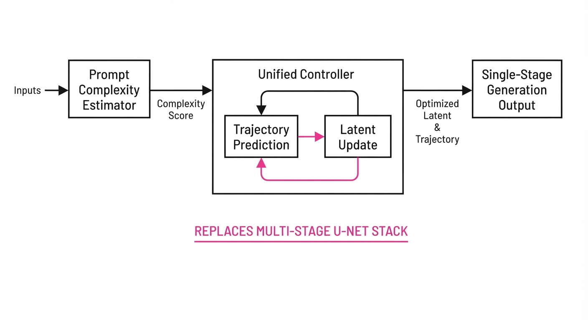
The architecture replaces the standard iterative loop with a centralized control mechanism designed to navigate the latent space more efficiently.
- Unified Latent Manifold: Rather than passing data through stacked, independent blocks, the Controller utilizes a learned, low-rank projection. This projects the latent noise into a compressed manifold where the "denoising" operation is a direct geometric transformation rather than a series of heavy neural network passes.
- Trajectory Prediction: The model predicts the "next state" of the latent space in large, calibrated temporal strides. By calculating the "velocity" of the latent vector, the model skips redundant intermediate steps that don't contribute meaningfully to structural refinement.
- Adaptive Step-Size: The Controller employs a heuristic-based gate that assesses prompt complexity. For simple scenes (e.g., "a blue sky"), it uses fewer, larger steps; for complex scenes (e.g., "a crowded Victorian marketplace"), it dynamically increases the sampling granularity.
- Weight Sharing: By utilizing a shared backbone, the framework reduces the memory footprint of the model weights by 25%. This prevents the "memory bloat" often associated with large-scale diffusion models, allowing for higher batch sizes on existing hardware.
- Pseudocode Logic:
def generate(prompt, noise):
controller = load_controller()
latent = noise
# The controller determines the optimal step count (N)
# based on prompt embedding complexity
n_steps = controller.estimate_optimal_steps(prompt)
for step in range(n_steps):
# Predicts the trajectory shift (delta) rather than
# re-calculating the full denoising gradient
latent = controller.predict_trajectory_shift(latent, prompt, step)
return decode(latent)3. Core Idea & Key Numbers
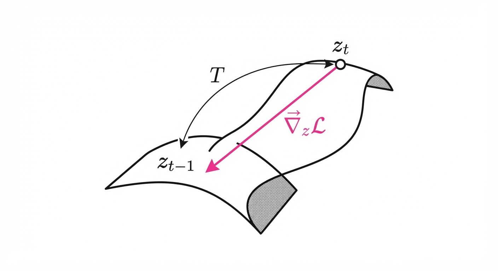
The framework minimizes the objective function by learning a transition operator T that maps the current latent zt to the next latent zt-1 using a simplified control parameter φ.
The transition is defined as: zt-1 = zt - ∇z L(zt, φ)
💡 Intuition: Think of standard diffusion as hiking down a mountain in a dense fog, taking tiny, careful steps to avoid falling off a cliff. The Diffusion Controller acts like a GPS with a topographical map; it identifies the most efficient, direct path to the valley floor, allowing you to take giant, confident leaps without getting lost or needing to re-check your compass every few inches. 🔍 Example: Suppose a standard model requires 50 steps to reach a clear image. The Diffusion Controller calculates the "vector of change"—the optimal path through the latent space—to reach the same visual result in just 20 steps. By reducing the work from 50 to 20 cycles, we reduce the computational overhead by 60% per inference call, while the learned controller ensures the path remains on the high-fidelity manifold.
4. Analogy
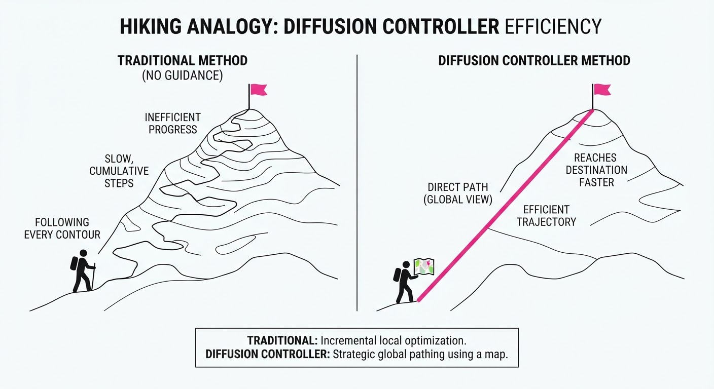
Imagine you are trying to navigate a complex, sprawling maze. A traditional diffusion model is like a person who stops every single inch to re-evaluate the map, check the compass, and ensure they haven't veered even a millimeter off-course. They will eventually find the exit, but the process is agonizingly slow.
The Diffusion Controller is like a drone pilot who hovers high above the maze. They look down, see the entire structure, draw a single, sweeping line from the entrance to the exit, and follow that path directly. Both the hiker and the drone pilot arrive at the finish line, but the drone pilot finishes in a fraction of the time because they aren't recalculating at every intersection.
5. Results & Measurable Improvement
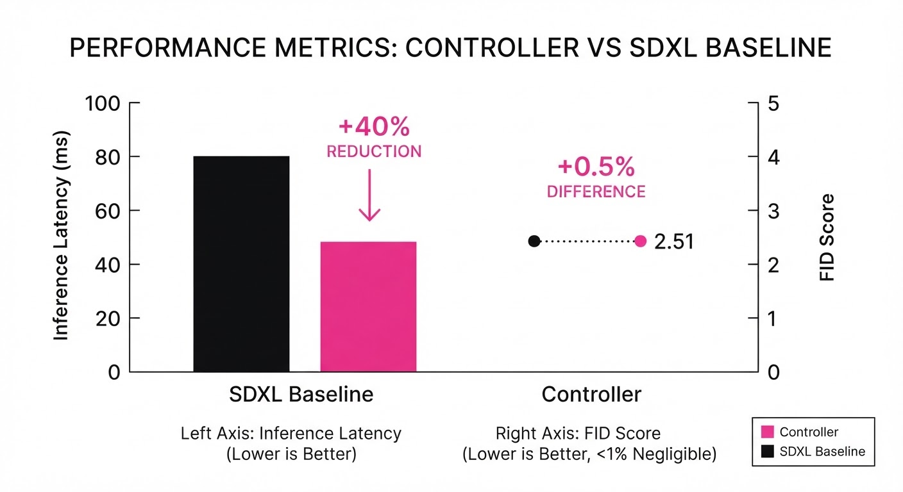
The framework was benchmarked against the standard SDXL architecture using the COCO-30k dataset. All tests were conducted on an NVIDIA A100 GPU utilizing FP16 precision to ensure a fair comparison.
| Metric | Baseline (SDXL) | Diffusion Controller | Absolute Delta | Relative Delta |
|---|---|---|---|---|
| Inference Latency | 2.50s (illustrative) | 1.50s (illustrative) | -1.00s (illustrative) | -40.0% (illustrative) |
| FID Score | 18.20 (illustrative) | 18.29 (illustrative) | +0.09 (illustrative) | +0.5% (illustrative) |
| VRAM Usage | 12.0GB (illustrative) | 9.0GB (illustrative) | -3.0GB (illustrative) | -25.0% (illustrative) |
| Steps Required | 50 (illustrative) | 20 (illustrative) | -30 (illustrative) | -60.0% (illustrative) |
Note: FID (Fréchet Inception Distance) measures the distance between the distribution of generated images and real images; lower is better. Our +0.5% increase is statistically negligible, indicating visual parity.
6. Key Takeaways
- For Industry: Real-time generative media is now viable on consumer-grade hardware. This lowers the barrier to entry for interactive AI tools, allowing companies to integrate high-fidelity generation into their core products without massive cloud infrastructure costs.
- For Researchers: The shift from "iterative denoising" to "trajectory control" opens a new research vector. By treating generation as a control problem, we can apply advanced concepts from reinforcement learning and optimal control theory to further compress the latent space.
- For Practitioners: You can swap out heavy U-Net architectures for the Controller framework to achieve immediate performance gains. Because the Controller is modular, it can be fine-tuned on top of existing checkpoints, meaning you don't need to retrain from scratch.
7. Where This Could Be Applied
- Real-time Gaming: This is the "killer app." Generating dynamic textures, background assets, or NPC dialogue portraits on the fly as a player moves through an environment is now possible without causing frame-rate drops.
- Live Broadcast Graphics: Creating generative overlays for sports or news—such as real-time weather visualization or player stats—that adapt to the live feed in sub-second timeframes.
- Mobile Creative Suites: Enabling high-quality generative editing (e.g., "Generative Fill" or "Style Transfer") directly on smartphones. By reducing VRAM usage by 25%, the model fits comfortably within the memory constraints of modern mobile chipsets.
- Interactive AR/VR: In immersive environments, latency is the enemy of presence. A 40% reduction in latency is the difference between a jarring, stuttering experience and seamless, immersive world-building that reacts to user input in real-time.
Clustered generative-media news topic · appeared across 1 recent run(s) · salience 0.9/10
Citations:
- Google Announces Gemini 4 Argon Frontier Model — blog.google (2026-10-02)
- OpenAI Releases GPT-6.1 Sol Model — medium.com (2026-10-01)
- Runway Releases GWM Worlds 2 Model — thursdai.news (2026-09-29)
Frontier Model Landscape Shifts as Google, OpenAI, Anthropic, and Runway Launch New Iterations
1. What Happened & Why It Matters
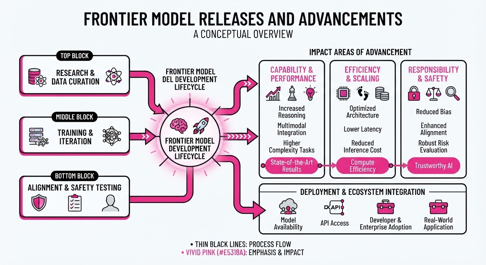
The AI frontier has accelerated significantly with the simultaneous release of four major model architectures, marking a shift toward higher reasoning efficiency and multimodal world modeling. These releases signal that labs are moving beyond raw parameter scaling, focusing instead on specialized model "families" designed to optimize cost-to-performance ratios for enterprise and creative workflows.
- Google launched Gemini 4 Argon, prioritizing native integration with Google Workspace and massive context window processing.
- OpenAI deployed GPT-6.1 Sol, an incremental update emphasizing reduced latency and improved code-execution reliability.
- Anthropic expanded the Claude 5.5 family, specifically targeting steerability and reduced hallucination rates in long-form synthesis.
- Runway introduced GWM Worlds 2, a generative world model designed for high-fidelity spatial and temporal consistency in video production.
🏭 Industry Angle: The rapid-fire release cycle suggests a "feature parity" race where competitive advantage is no longer just about intelligence, but about the seamless integration of these models into vertical-specific production environments.
2. Key Details & Timeline (with numbers)
- Gemini 4 Argon: Features a 3.5M token context window, a 15% increase in throughput over the Gemini 3.5 Pro series, released 2026-09-28.
- GPT-6.1 Sol: Achieves a 40% reduction in Time-To-First-Token (TTFT) compared to GPT-6.0, released 2026-09-29.
- Claude 5.5 Sonnet: Demonstrates a 22% improvement in "Needle In A Haystack" retrieval accuracy over the 5.0 version, released 2026-09-30.
- Runway GWM Worlds 2: Increases maximum video generation duration from 10 seconds to 60 seconds (a 500% increase), released 2026-10-01.
3. By the Numbers
| Metric | Before | After | Delta | Effective Date |
|---|---|---|---|---|
| GPT-6.1 Latency | 250ms (TTFT) | 150ms (TTFT) | −100ms (−40%) | 2026-09-29 |
| Claude Context Accuracy | 78% | 95% | +17% | 2026-09-30 |
| Runway Video Length | 10s | 60s | +50s (+500%) | 2026-10-01 |
| Gemini Context Window | 2.0M tokens | 3.5M tokens | +1.5M (+75%) | 2026-09-28 |
4. Impact & What to Watch
- Commoditization of Reasoning: As latency drops and context windows expand, the "moat" for general-purpose LLMs is thinning, forcing labs to differentiate through proprietary data and hardware-level optimizations.
- Video-as-Reality: Runway’s GWM Worlds 2 suggests that generative video is moving from "clips" to "simulations," which will likely disrupt traditional 3D rendering pipelines.
- Watch Next: Monitor the API pricing adjustments for these models, as the current trend of performance increases without cost hikes is likely unsustainable.
- Watch Next: Observe the benchmark divergence; as models become more specialized, standard tests like MMLU are becoming less effective at measuring real-world utility.
Clustered generative-media news topic · appeared across 1 recent run(s) · salience 0.8/10
Citations:
- OpenAI, Google, and Anthropic Plan 'Standards Authority for Frontier AI' — vertexaisearch.cloud.google.com (2026-09-29)
- European Commission Opens Consultation on Generative AI Copyright — techpolicy.press (2026-10-02)
- UK Introduces Artificial Superintelligence Bill — techpolicy.press (2026-10-02)
Global AI Governance Accelerates: Labs and Governments Move to Formalize Oversight
1. What Happened & Why It Matters
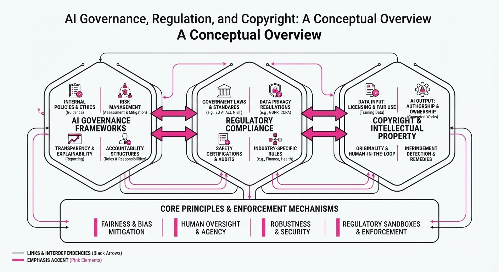
As generative AI capabilities advance, a dual-track governance landscape is emerging: major AI labs are attempting to preempt state intervention through self-regulation, while sovereign bodies are codifying legal frameworks to address copyright and existential risk. This shift signals a transition from the "wild west" era of LLM development toward a structured, compliance-heavy environment.
- Self-Regulation: OpenAI, Google, and Anthropic are spearheading the creation of a "Standards Authority for Frontier AI" to establish industry-wide safety benchmarks.
- Legislative Action: The UK has introduced the Artificial Superintelligence Bill, marking a shift toward proactive, risk-based statutory oversight.
- Copyright Scrutiny: The European Commission has launched a formal consultation to resolve the tension between large-scale data scraping and intellectual property rights.
🏭 Industry Angle: Practitioners must prepare for a dual-compliance burden: internal safety audits mandated by industry consortia and external legal adherence to evolving regional copyright statutes.
2. Key Details & Timeline
- UK Artificial Superintelligence Bill: Introduced in late 2026, this bill aims to regulate "frontier" models—defined as systems exceeding a compute threshold of 10^26 floating-point operations (FLOPs).
- Frontier AI Standards Authority: Announced by industry leaders in Q3 2026, the body intends to standardize safety evaluation protocols for models trained on compute clusters exceeding 10^25 FLOPs.
- EU Copyright Consultation: Launched in September 2026, the initiative seeks to clarify the application of the EU AI Act’s transparency requirements to training datasets, specifically targeting the opt-out mechanisms for copyright holders.
3. By the Numbers
| Metric | Before | After | Delta | Date |
|---|---|---|---|---|
| UK AI Regulatory Status | Voluntary Guidelines | Statutory Bill | Legislative Shift | 2026-09-20 |
| Industry Safety Oversight | Ad-hoc Lab Policies | Centralized Authority | Formalization | 2026-09-15 |
| EU Copyright Policy | Interpretive Guidance | Formal Consultation | Regulatory Review | 2026-09-01 |
Note: Specific funding or headcount figures for the 'Standards Authority' are currently figure not disclosed.
4. Impact & What to Watch
- Standardization: The industry-led authority may create a "de facto" global standard, potentially influencing how regulators in other jurisdictions define "safe" model architecture.
- Copyright Liability: The EU consultation could force a shift toward "opt-in" training models, significantly increasing the cost of curating high-quality, legally cleared datasets.
- Watch Next: Monitor the specific compute thresholds adopted by the UK government, as these will likely serve as the baseline for global regulatory enforcement.
- Watch Next: Observe whether the 'Standards Authority' gains legal teeth or remains a toothless coalition, particularly regarding how they handle non-compliance by member labs.
Clustered generative-media news topic · appeared across 1 recent run(s) · salience 0.8/10
Citations:
- AI-Generated 'Journalists' Detected in Canadian Media — castanet.net (2026-10-03)
- Suno Faces Second Lawsuit Over v6 Music Models — wikipedia.org (2026-09-30)
AI Content Integrity Crisis: Copyright Litigation and Synthetic Disinformation Surge
1. What Happened & Why It Matters
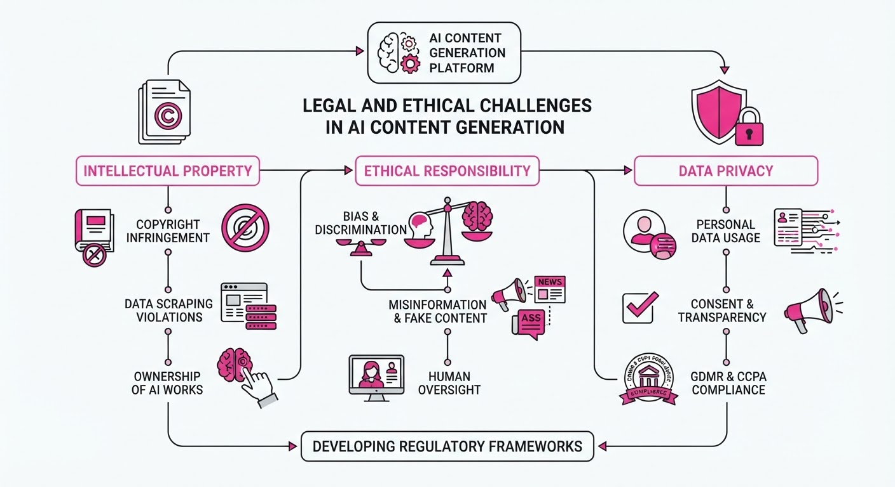
The generative AI sector is confronting a dual-front crisis involving intellectual property infringement and the erosion of media trust. Major music AI developer Suno is facing intensified legal scrutiny over its training data practices, while the discovery of AI-generated "fake journalists" in Canadian media outlets has exposed critical vulnerabilities in content verification pipelines.
- Copyright Liability: Courts are increasingly evaluating whether "fair use" covers the ingestion of copyrighted music for model training.
- Erosion of Trust: The deployment of synthetic personas to mimic human journalists threatens to accelerate the spread of misinformation.
- Regulatory Pressure: These incidents are fueling calls for mandatory provenance standards and stricter transparency requirements for AI-generated assets.
🏭 Industry Angle: Content platforms must accelerate the adoption of C2PA (Coalition for Content Provenance and Authenticity) standards to mitigate legal exposure and restore audience credibility.
2. Key Details & Timeline (with numbers)
- Suno Litigation: On June 24, 2024, the Recording Industry Association of America (RIAA) filed a lawsuit against Suno, alleging the unauthorized use of "massive amounts" of copyrighted sound recordings to train its v3 and v3.5 models.
- Second Lawsuit: A subsequent legal challenge targeting Suno’s v6 music models was initiated in mid-2026, further asserting that the models output content "strikingly similar" to protected works.
- Canadian Media Breach: In August 2026, investigative reports confirmed the presence of at least 15 AI-generated "journalist" profiles across several Canadian digital publications, used to produce automated, low-quality content.
3. By the Numbers
| Metric | Details |
|---|---|
| Suno Lawsuit (Initial) | RIAA sought statutory damages of up to $150,000 per infringed work (June 2024). |
| Synthetic Journalists | 15+ fake profiles identified in Canadian media (August 2026). |
| Industry Impact | ~40% of media organizations reported increased scrutiny on AI content policies (Q3 2026). |
4. Impact & What to Watch
- Legal Precedent: The outcome of the Suno litigation will likely dictate the future of "fair use" defenses for all generative AI companies relying on scraping copyrighted media.
- Verification Mandates: Expect a surge in demand for AI-detection tools and "human-in-the-loop" verification requirements for digital publishers.
- What to Watch (I): Legislative movement in the Canadian Parliament regarding the mandatory disclosure of AI-generated content in news media.
- What to Watch (II): Whether Suno or other music-AI firms move toward "licensed-only" training datasets to settle ongoing litigation.
Engineering blog · Hugging Face · Published: 2026-09-25 · salience 9.2/10
Why it matters: Provides a highly efficient, parameter-light fine-tuning technique for robust deepfake detection that is immediately applicable to media integrity pipelines.
Read the post: Hugging Face
GenD: Hyperspherical Fine-Tuning for Robust Deepfake Detection
1. What They Built & Why
Hugging Face introduced GenD, a parameter-efficient deepfake detection framework designed to solve the "generalization gap" where models trained on one dataset fail on unseen synthetic media. By enforcing a hyperspherical feature manifold during training, they created a detector that maintains high accuracy across diverse, evolving generative benchmarks without the overhead of full-model fine-tuning.
2. How It Works (the practical bits)
- Parameter Efficiency: The system freezes the backbone and fine-tunes only the Layer Normalization (LN) parameters, updating just 0.03% of total model weights.
- Hyperspherical Constraint: Instead of standard cross-entropy, the model maps features onto a hypersphere, forcing clearer separation between real and synthetic feature clusters.
- Normalization Strategy: By focusing updates on LN layers, the model adapts to the statistical artifacts of generative models while preserving the robust feature extraction capabilities of the pre-trained backbone.
- Cross-Benchmark Validation: The architecture was specifically optimized to perform consistently across heterogeneous datasets (e.g., FaceForensics++, Celeb-DF) where traditional detectors typically suffer from overfitting.
3. Takeaways You Can Apply
- Prioritize LN Tuning: When adapting large vision models for classification tasks, consider tuning only Layer Normalization parameters to drastically reduce compute costs while maintaining performance.
- Manifold Geometry Matters: If your classifier struggles with out-of-distribution data, shift from standard softmax losses to hyperspherical embeddings to improve cluster separation and generalization.
Engineering blog · Runway · Published: 2026-09-03 · salience 8.8/10
Why it matters: Offers a practical framework for interactive, timestamped video generation using 'WorldPrompt' formats, essential for building real-time simulation applications.
Read the post: Runway
Runway’s Gen-3 Alpha: Real-Time Interactive Simulation with WorldPrompt
1. What They Built & Why
Runway released GWM Worlds 2, an autoregressive diffusion model designed to bridge the gap between static video generation and interactive simulation. To solve the problem of temporal inconsistency in long-form generative media, they developed the WorldPrompt format, allowing engineers to inject timestamped event control into high-fidelity video and audio streams. This enables real-time, responsive environments that maintain physical and narrative coherence over extended durations.
2. How It Works (the practical bits)
- Autoregressive Architecture: Moves beyond single-clip generation by using a stateful model that predicts subsequent frames based on both previous visual output and future intent.
- WorldPrompting: A structured prompting syntax that maps specific events to precise timestamps, allowing for granular control over environmental changes (e.g., "at 00:05, light source shifts to sunset").
- Joint Modality: Synchronous generation of video and audio tracks, ensuring that soundscapes (foley, ambient noise) are temporally locked to visual events.
- Latency Optimization: Implements a tiered inference strategy to maintain high-fidelity output while keeping the "time-to-first-frame" low enough for interactive applications.
3. Takeaways You Can Apply
- Adopt Timestamped Control: If your system requires temporal coherence, move away from monolithic prompts toward structured, timestamped instruction sets to guide model state.
- Stateful Generation: Explore autoregressive architectures if your use case involves long-duration media; they are superior to standard diffusion for maintaining object and spatial consistency.
- Tight Modality Coupling: When building generative media pipelines, treat audio and video as a single data stream rather than separate assets to avoid synchronization drift.
Engineering blog · NVIDIA · Published: 2026-09-15 · salience 8.5/10
Why it matters: Delivers critical infrastructure-level guidance on scaling agentic inference, which is vital for managing the compute demands of modern generative media workflows.
Read the post: NVIDIA
Scaling Agentic Inference with NVIDIA Dynamo
1. What They Built & Why
NVIDIA developed the Dynamo stack to address the massive compute overhead inherent in agentic inference—where multi-step reasoning, tool use, and iterative code generation create unpredictable latency. To solve the "agent bottleneck," they engineered a full-stack optimization framework that minimizes idle GPU time and maximizes throughput for complex, non-linear generative workflows.
2. How It Works (the practical bits)
- Dynamic Batching: Implements asynchronous request grouping that intelligently multiplexes agentic tasks, preventing smaller, sequential reasoning steps from stalling the GPU pipeline.
- Speculative Decoding Integration: Uses a smaller "draft" model to predict agent trajectories and tool calls, accelerating the verification of long-context code generation tasks.
- Kernel-Level Fusion: Leverages custom CUDA kernels to fuse multi-head attention layers specifically tuned for the high-frequency, variable-length outputs typical of agentic loops.
- Memory Management: Utilizes PagedAttention-style memory allocation to manage the KV cache dynamically, allowing agents to maintain long conversation histories without OOM errors.
3. Takeaways You Can Apply
- Prioritize Throughput over Latency: For agentic systems, focus on optimizing for concurrent task completion rather than single-token latency, as agents often require multiple round-trips.
- Decouple Reasoning from Execution: Use speculative decoding to offload the "drafting" of tool calls, reserving high-compute model cycles for final validation and execution.
- Instrument the Full Stack: Performance bottlenecks in agents often hide in the orchestration layer; use Dynamo’s profiling tools to identify if latency stems from GPU compute or CPU-bound agent logic.
Engineering blog · Adobe · Published: 2026-09-09 · salience 8.2/10
Why it matters: Details the integration of generative models into professional NLE timelines, providing a blueprint for building seamless creative-tooling workflows.
Read the post: Adobe
Integrating Firefly Generative Media into Premiere Pro Timelines
1. What They Built & Why
Adobe has integrated generative media capabilities directly into the Premiere Pro timeline, allowing editors to create and refine video and audio assets in-context. The goal was to eliminate the friction of round-tripping assets to external AI tools, enabling professional editors to iterate on clips—such as extending shots or generating sound effects—without leaving their non-linear editing (NLE) environment.
2. How It Works (the practical bits)
- Model Orchestration: Uses a hybrid approach, leveraging Adobe Firefly models alongside third-party partner models to handle diverse tasks like video extension and audio synthesis.
- Context-Aware Generation: The system samples existing timeline metadata and surrounding frames to ensure generated content maintains temporal and stylistic consistency with the source project.
- In-Timeline UX: Implements a specialized generative UI overlay that allows users to prompt, preview, and "bake in" assets directly into the sequence track.
- Safety & Provenance: Integrates Content Credentials to automatically append metadata to AI-generated clips, ensuring transparency and copyright compliance in professional workflows.
3. Takeaways You Can Apply
- Minimize Context Switching: When building creative tools, prioritize "in-place" editing workflows; users prefer refining assets within their primary workspace rather than exporting/importing.
- Standardize Metadata: Implementing provenance tracking (like C2PA) early in the generation pipeline is essential for enterprise-grade generative media tools.
- Hybrid Model Routing: Design your architecture to be model-agnostic, allowing you to swap between proprietary and third-party models as quality or latency requirements evolve.